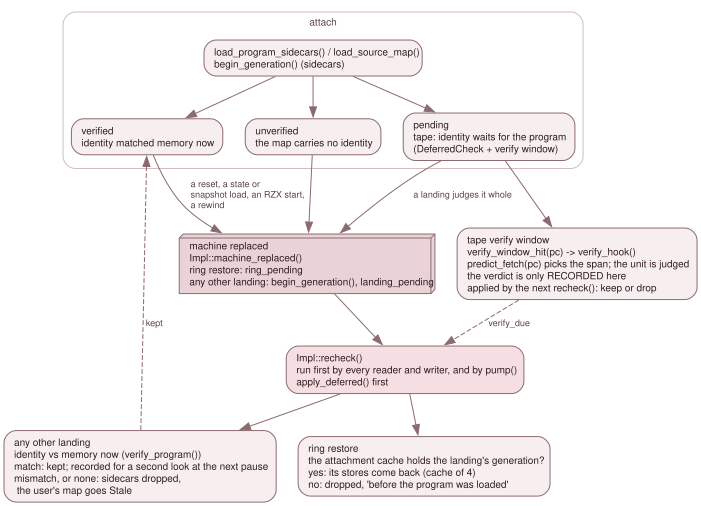

7.6 Lifetime: resets, snapshots, rewind and tapes¶
The stores describe a program. When the machine is replaced, whether by a reset,
a snapshot, a state load, a rewind or the arrival of a tape's program, they may
describe a program that is no longer there. This page is the set of rules that
decides, for each store and each kind of replacement, between keep, drop and
stale. (The user's labels and comments are not among the stores that follow
these rules: that store is kept across every replacement, 7.4.6.)
The C variable store (7.9) is not a fourth store: it is part
of the SourceMap it was read from, so these rules apply to it with no code of its own.
All the rules run in one place, Impl::recheck()
(src/debug/debugger_source.cpp).

A landing only marks the new generation. recheck() judges it, run first by
every reader and writer. A rewind inside the ring restores what was attached
there; any other landing keeps a map only if its identity matches memory now; a
tape's program is judged where the CPU first runs it.
The load generation¶
A load generation is a counter that says which machine's history a store and
a trace entry belong to. Impl::generation_counter is the source, and
DebugState::load_generation() publishes the current value. It lives in the
backend, not in the Emulator, because a cold boot rebuilds the emulator and a
counter it owned would restart and collide with the cache keys. It is host-side
state: it is not saved in a state file.
A new generation begins in two places (Impl::begin_generation()):
load_program_sidecars(): the sidecars about to be attached belong to the program loaded now;Impl::machine_replaced(), for any landing that is not a rewind-ring restore.
Each rewind slot records the generation it was taken in (RewindBuffer::Slot::generation),
and RewindBuffer::restore_nearest() sets it as the current one before loading
the state, so the hook that fires inside the load already sees the landing's
generation, and sets DebugState::restoring_from_rewind() for the duration
(RingRestore).
The hook only marks; recheck() judges¶
Emulator::init() and Emulator::load_state() end by calling
debug_after_machine_transition_(), which calls the machine-replaced hook the
Debugger installed (DebugState::notify_machine_replaced()). The hook
(Impl::machine_replaced()) resets the backend's own stop evidence with arm(None)
and then sets one of two flags: ring_pending for a ring restore (and notes the
restored generation), or, for any other landing, begins a generation and sets
landing_pending. It does nothing else, because the machine may still be
half-built when the hook fires (inside init(), or a warm start).
Impl::recheck() does the work, when somebody looks. Every reader runs it first
(source_map(), source_map_status(), variables(), source_location(), lookup(),
lookup_name(), symbols(), executed_source_lines(), source_step()), and so
does every writer (load_map(), clear_symbols(), load_source_map(),
clear_source_map(), load_program_sidecars()), so a pending landing is judged
before the writer's change and cannot undo it later. Debugger::pump() runs it too,
so a landing is announced to listeners even if nobody reads. It returns at once
when nothing is pending. Transitions are collected in pending_log and announced
to listeners at Info after the flags are cleared, so a listener that reads back
sees a settled backend.
Tier 1: a rewind-ring restore¶
When recheck() finds ring_pending, and the landing's generation g differs
from the one the stores are attached for (attach_gen), it puts back the
attachment of that generation:
- The record comes from the attachment cache,
Impl::attach_cache: oneAttachmentper generation, holding the sidecarSourceMapandSymbolTable(shared, immutable), the reason text, and the sidecar identity checks still to make. It keeps the lastATTACH_CACHE_MAX= 4 (ATTACH_CACHE_MAX,debugger_impl.h:204); when a fifth is added the oldest record is evicted.cache_push_current()erases a generation's existing record and appends the new one, so a replaced record becomes the newest and is the last to be evicted. - A restored store is assigned into the existing objects, so the Qt panels'
&symbols()stays valid. - With no record, the sidecar stores are cleared with "this point of the history is before the program was loaded".
- The user's symbols never change with lifetime. The user's source map is re-verified only if it was last judged in another generation, and not at all while it is still waiting for a tape's program.
Log lines say what happened ("Restored the program's ... of this point in the history", "Dropped the program's ... before the program was loaded").
Tier 2: any other landing¶
A reset, a snapshot load, a state loaded from outside the ring, an RZX playback
start, or a program loaded by hand: fresh is true (landing_pending and the
generation is the newest one), and the stores are judged by identity
(7.2).
- The program's sidecars are kept only if the source map carries an identity
and
verify_identity(source_map)(overMmu::peek()andDebugger::peek(Page{n})) matches memory now. Then the generation moves (attach_gen = g) and the attachment is cached. A mismatch, or a map with no identity, drops the sidecars with the reason "its binary identity does not match the program now in memory", or "the machine was reset or replaced and it has no binary identity to check". Sidecar symbols with no source map beside them have nothing to check, so they are dropped at such a landing too. The attachment is dropped from the stores but its cached record stays: a rewind into the generation before the landing brings it back. - A kept map is checked again. A reset's ROM may clear RAM only later, so a
kept map sets
pause_verify_sidecar(orpause_verify_user) and the clock; at the next time the machine is paused with the clock moved,recheck()verifies it again and drops the map if it no longer matches. A run that is never paused does not get this second look. - The user's source map is judged the same way (
verify_user()) and, on a mismatch or no identity, goes stale, not away:source_map()andsource_location()answer empty,source_map_status()saysStalewith the file and the reason, and loading it again by hand makes it live. - A program the guest loads for itself (the NextZXOS browser,
LOAD "") is invisible to the backend: it sees no landing, so its predecessor's sidecars stay until a reset or a load. Loading the same program again (a rebuild) attaches the new build's map (SRCLIFE-17); a map loaded by hand across such a load stays the user's, stale without an identity and live when the new build matches it (SRCLIFE-18).
Back and Reverse Continue count a trace entry only if it belongs to the current
generation (TraceLog::recorded() plus the markers): Impl::trace_gens holds (first trace sequence number, generation)
markers, kept in step with the trace's retained window
(note_generation(), generation_of_seq()) and cleared when a cold boot makes a
new TraceLog.
A tape's program: the verify window¶
A tape's program is not in memory when load_program_sidecars() returns, so a map
that carries an identity (an SLD's hash, z88dk byte checks) cannot be judged yet. It
attaches at once and pending (SidecarLoad::sources_pending,
SourceMapStatus::pending; for a hand load, load_source_map(path, accept,
verify_at_first_execution)), and the attach line ends (identity check pending:
the program loads from tape). Rule-4 sections bind at the attach, since that is
where the loader puts the bytes.
- The check.
Impl::add_check()stores aDeferredCheck: a copy of the map (the live store may be replaced under it), the units still to judge and theirSourceMap::verify_spans(), and which stores answer for the verdict:guards_sources(the live source store, the user's or a sidecar's) andguards_symbols(the sidecar symbols that came with the map, so they go with a map of another build even when the user's source map is the one kept). At most one check per owner. - The trigger.
DebugStatehas a one-shot verify window: a range of PCs set byImpl::sync_verify_window()to[min lo, max hi)over the pending spans of all checks (set_verify_window()). While it is set the machine is armed (verify_hold_is anarmed()contributor of its own, withmagic_hold_, inrefresh_gates_()andSuspendScope). The emulator asksverify_window_hit(pc), two compares, first inrun_frame()'s armed block (verify_window_hit,emulator.cpp:10345), beforeconsume_step_off(), the legacy breakpoint test and the execute gate, and instep_frame_slot()for a debugger Step (verify_window_hit,emulator.cpp:12024). - The verdict is recorded, not applied. On a hit,
Impl::verify_hook(pc)takespredict_fetch(pc), finds the spans of each check that containpcin that exact memory, judges each unit now withverify_identity_unit()(throughDebugger::peek, so it reads page 20 while it is unmapped and touches no watchpoint, latch or ring), removes the unit and its spans, and setsverify_due. A mismatch setsmismatch. The hook never pauses, and does nothing inreplay_mode(). - Applying it.
Impl::apply_deferred()is the first thingrecheck()does whenverify_due, so a reader, or a stop on the very instruction that triggered the check, already sees the map judged. It logs one Info line per memory judged (Verified ... in page 20; N memory spaces still to check),Verified ... the program loaded from tape matches its binary identitywhen the last matches, and on a mismatch drops the sidecar map with its symbols throughdrop_sidecars(), or the user's map toNone(notStale: it was refused, as a mismatch at load refuses it), at error level withRejected ... does not match its binary identity. The window stays set for the units not run yet, and is cleared when none remains. - Landings meanwhile. A landing that is not a ring restore judges a pending map
whole, as it does any carried map: a match clears the check; a mismatch, or a
reset before the program arrived, drops a sidecar map, while a user's map goes
stale (
verify_user()), unlike the verify-window verdict above, which takes it toNone; a ring restore brings back the generation'sAttachment::checks, updated at every judged space, so a rewind keeps what was verified. A user's pending map is carried into the next program's load, and across rewinds, still pending. --source-mapwith a tape. The loop owner pollssource_map_status()once per tick; a map dropped by the check exits 1 (7.3).
A dot command's map: judged at its entry¶
A z88dk dot command is not a program the emulator loads. NextZXOS copies the file into a DivMMC RAM
bank when the command is typed and runs it from $2000 there, so at the moment the map is attached
nothing says whether the right command is in memory, and a landing says nothing about it either.
The map therefore has its own rule, on top of the tape machinery above. SourceMap::dot()
(source_map.h:194) is set by the z88dk adapter (7.4.3, rule 5).
- Always deferred.
load_source_map()defers a dot map whateververify_at_first_executionsays (verify_at_first_execution,debugger_source.cpp:502), when it has any byte check.add_check()marks the checkdotonly if one of its units is the DivMMC bank,dot_entry_unit()=DivmmcRam{kNextZxosDotBank}(bank 2,kNextZxosDotBank,z88dk_space.h:46); a dot map with no byte check of the DivMMC part has no entry to judge and takes the tape rule (add_check(),debugger_source.cpp:161-176). - The state.
dot_reset()(debugger_source.cpp:183) puts the check back to "waiting for the entry": every unit is to judge again, but only the entry (the DivMMC unit) is armed: the spans of every other unit (a dotx's main part, in main RAM) are moved toheld, not armed.dot_match()(debugger_source.cpp:200) is the entry matching: the DivMMC unit is done,entry_okis set and the held spans are armed, which from then on follow the tape rule (judged where the CPU first runs them). - The trigger.
sync_verify_window()always includeskDotEntry($2000,kDotEntry,debugger_source.cpp:114) in the window of a dot check (kDotEntry,debugger_source.cpp:299-302).verify_hook(pc)(debugger_source.cpp:315) judges whenpc == kDotEntryandpredict_fetch(pc)is the entry unit: a match records the verdictVerifiedand callsdot_match()once; a mismatch is another dot command: if the entry had matched it goes back todot_reset(), the event isNotTheOne, and nothing is dropped.apply_deferred()(debugger_source.cpp:372) tells each verdict once ("The dot command started in <space> is not the one source map '<file>' describes; it stays pending";Verified ... the dot command in <space> matches its binary identity) and keeps the check: it is never finished (checks.push_backatdebugger_source.cpp:430), so a later entry that does not match puts the map back to pending. - A landing does not judge it.
recheck()(debugger_source.cpp:976): for a user's map that is a dot map,verify_user()returns at once, keeping the map live and not stale (verify_user,debugger_source.cpp:990-999); the checks are re-derived bydot_landing(fresh)(debugger_source.cpp:233). A fresh landing (reset, state load, program load, cold boot) sends the user's dot checks (dot_landing()skips the others) todot_reset(): pending until the next entry. A ring restore reads back what the original run showed at the landed cycle. - The history.
dot_record()(debugger_source.cpp:213) appends a snapshot{generation, cycle, entry_ok, units, spans, held}toDeferredCheck::historyat every judgement and every change of the check, replacing the records of the same generation from that cycle on (a re-run replaces what the first run recorded from there), and keeping at mostkDotHistoryMax= 256 (kDotHistoryMax,debugger_impl.h:167; the oldest go, and a landing older than the oldest reads pending).dot_landing(false)picks the last record of the landed generation strictly before the landed cycle (a verdict at cycle C applies to the instruction about to run at C, which a landing at C has not run); none means pending. Records of earlier generations are kept, so a rewind back across a reset reads them. - A hand load made while the command already runs.
load_source_map()callsdot_adopt()(debugger_source.cpp:256) for a dot map: ifpredict_fetch(PC)is the entry unit and the bank holds this command, it judges like a landing and is verified at once (dot_match()); the result is no longer pending and its note is the ordinary identity note (dot_adopt(),debugger_source.cpp:522-528). - RZX. An RZX playback start is a landing like any other (above), and
--source-mapwith a replay accepts only a dot map (7.3): the map attaches pending at start-up and the verify hook does not distinguish a replayed session from a live one (replay_mode()is the rewind replay's flag,emulator.h:1254, not RZX's). What the rowz88dk-dot-source-rzx-funcpins is the attach and the refusal, not a verdict reached during playback. - Where it shows.
SourceMapStatus::dot(debugger.h:1214, set atSourceMapStatus::dot,debugger_source.cpp:603) tells the Source tab to word its pending note ...when the dot command runs (7.7).
What the backend cannot see¶
Only landings it is told about and loads that go through it. A program the guest
loads itself (LOAD "", the NextZXOS browser) is invisible, which is why its
predecessor's sidecars stay until a reset or a load. And an identity is a snapshot of
the image as it was right after the load: a program may legitimately change
variables inside its own image afterwards, which is why a hand load can accept a
known mismatch (accept_identity_mismatch).
Where it is tested¶
source_debug_test: SRCLIFE-* (ring restores, the attachment cache and its
eviction, state and snapshot landings, RZX start, the stale user map, rewind past a
load, a rebuild), SRCDBG-TAPE-* (the verify window and the deferred checks, per
memory) and SRCDBG-OWN-* (ownership). source_debug_posix_test holds the
rows whose sidecars are POSIX file types (a looping link, a FIFO), which wine cannot
create.